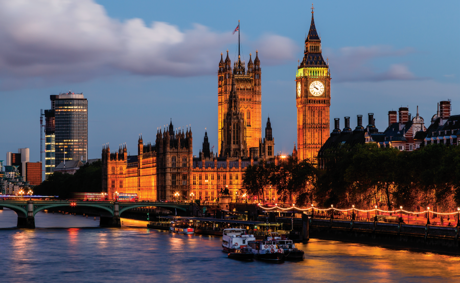
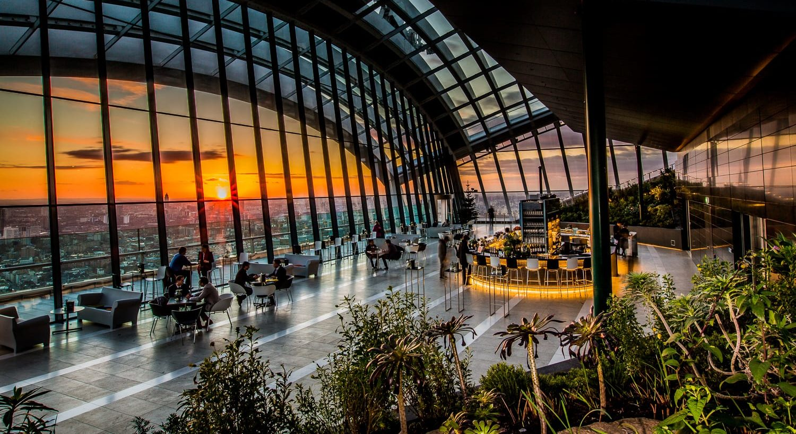
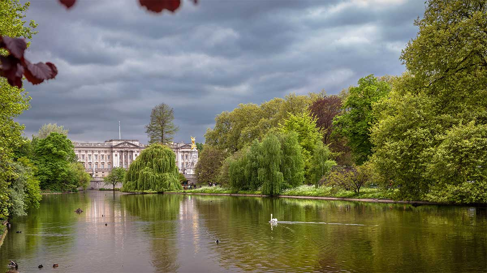
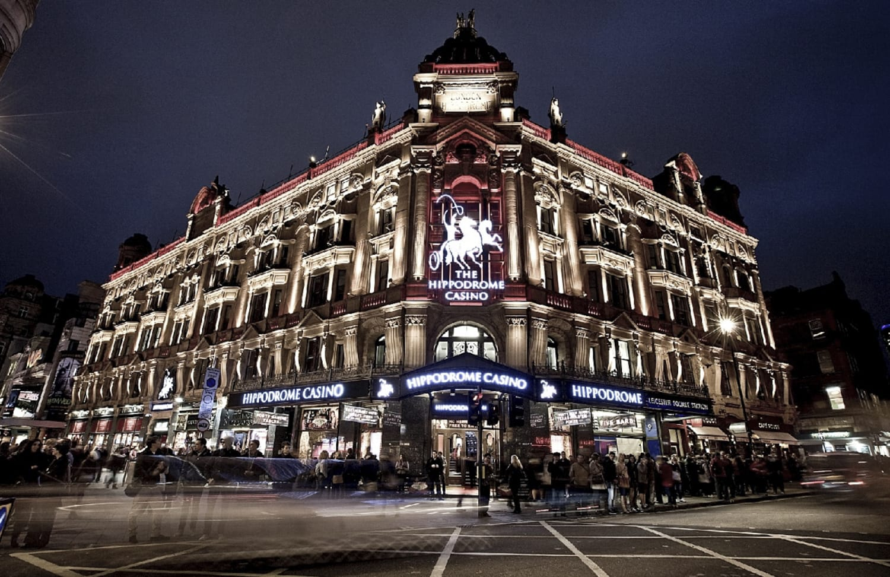
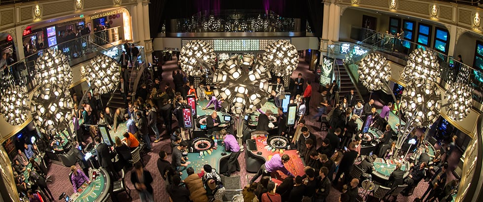

<!DOCTYPE html>
<html>
	<head>
		<title>Atractii turistice</title>
		<link rel="icon" type="x-icon" href="favicon.ico">
		<style>
			ul {    list-style-type: none;
 				margin: 0;
  				padding: 0;
 				overflow: hidden;
 				background-color: #C6C6D9;
			}
			li {float: left;}
			li a {  display: block;
 				color: black;
 				text-align: center;
				padding: 14px 16px;
 				text-decoration: none;
			}
			li a:hover {background-color: #C170CD;}
		</style>
	</head>
	<body bgcolor=#C6C6D9>
		<ul>
  			<li><a class="active" href="Atractii turistice in Londra.html"><font size="5" id="Londra">&nbsp;&nbsp;&nbsp;&nbsp;&nbsp;&nbsp; ACASA &nbsp;&nbsp;&nbsp;&nbsp;&nbsp;&nbsp;</a></li></font>
  			<li><a href="Atractii turistice.html"><font size="5"> ATRACTII TURISTICE </a></li></font>
			<li><a href="Atractii non-turistice.html"><font size="5"> ATRACTII NON-TURISTICE </a></li></font>
			<li><a href="Istorie.html"><font size="5"> ISTORIE </a><li></font>
  			<li><a href="Alte informatii.html"><font size="5"> ALTE INFORMATII </a></li></font>
		</ul>

		<hr>

		<blockquote><blockquote>

		<p>&nbsp;<p><font face="Arial"><font size="6">ATRACTII NON-TURISTICE</font>
		</font>
		<p><center></center>
		<p>&nbsp;&nbsp;<font size="4" face="Arial">Londra este, f&#259;r&#259; îndoial&#259;, cel mai bun ora&#537; din lume. Ei bine, s-ar putea s&#259; fiu p&#259;rtinitor, dar este destul de grozav. O parte din extraordinarul s&#259;u este c&#259; exist&#259; lucruri nelimitate de f&#259;cut, care variaz&#259; de la pur &#537;i simplu necunoscut la cele mai ridicole. Mai jos ve&#539;i g&#259;si o list&#259; cuprinz&#259;toare de lucruri neturistice de f&#259;cut în Londra.
		</font>

		<p>&nbsp;<p><font size="4" face="Arial">&nbsp;&nbsp;&nbsp;&nbsp;<b>1.Lua&#539;i ceaiul de dup&#259;-amiaz&#259; la o cafenea pentru pisici</b>
		</font>
		<p><font size="4" face="Arial">&nbsp;&nbsp;Dac&#259; nu &#537;ti&#539;i deja, cafenelele pentru pisici sunt un lucru. &#536;i Londra nu putea r&#259;mâne în urm&#259; în aceast&#259; tendin&#539;&#259; felin&#259;. Lady Dinah’s Cat Emporium ofer&#259; o &#537;ans&#259; de a bea un ceai cu pisoi care r&#259;t&#259;cesc prin jur. Pentru a ad&#259;uga mai mult la distrac&#539;ie, este vegan friendly!
		</font>

		<p>&nbsp;<p><font size="4" face="Arial">&nbsp;&nbsp;&nbsp;&nbsp;<b>2.Admira&#539;i priveli&#537;tile de la Skygarden</b>
		</font>
		<p><font size="4" face="Arial">&nbsp;&nbsp;Skygarden ofer&#259; vederi magnifice ale Londrei &#537;i este gratuit. Este, de asemenea, foarte frumos la interior. </font>
		<p><center></center>

		<p>&nbsp;<p><font size="4" face="Arial">&nbsp;&nbsp;&nbsp;&nbsp;<b>3.Privi&#539;i c&#259;prioarele s&#259;lbatice care cutreier&#259; în cel mai mare parc regal din Londra</b>
		</font>
		<p><font size="4" face="Arial">&nbsp;&nbsp;Richmond Park este s&#259;lbatic &#537;i uria&#537;, atât de s&#259;lbatic &#537;i atât de uria&#537; încât ui&#539;i complet c&#259; te afli într-un ora&#537;. Cel mai bine se bucur&#259; de ciclism, deoarece este foarte mare, a&#537;a cum am men&#539;ionat deja. Pute&#539;i, de asemenea, s&#259; v&#259; plimba&#539;i, doar l&#259;sa&#539;i suficient timp &#537;i energie. În plus, exist&#259; turme de frumoase c&#259;prioare s&#259;lbatice care se plimb&#259; în voie.</font>

		<p>&nbsp;<p><font size="4" face="Arial">&nbsp;&nbsp;&nbsp;&nbsp;<b>4.Merge&#539;i pe Bermondsey’s Beer mile</b>
		</font>
		<p><font size="4" face="Arial">&nbsp;&nbsp;Fan al berii artizanale? Acest cartier a devenit un centru pentru microberarii din Londra. Acestea sunt deschise sâmb&#259;ta pentru ca vizitatorii s&#259; vin&#259; &#537;i s&#259; guste. Exist&#259; o mul&#539;ime de ber&#259;rii de vizitat.</font>

		<p>&nbsp;<p><font size="4" face="Arial">&nbsp;&nbsp;&nbsp;&nbsp;<b>5.Vede&#539;i o cas&#259; f&#259;cut&#259; cu un milion de pl&#259;ci de mozaic: Chiswick Mosaic House</b>
		</font>
		<p><font size="4" face="Arial">&nbsp;&nbsp;Carrie Reichardt’s este artista din spatele acestei case, care este ascuns&#259; pe o strad&#259; lini&#537;tit&#259;, suburban&#259;, din Chiswick. Este acoperit de sus în jos cu pl&#259;ci de mozaic colorate. Spune o mie de pove&#537;ti, fiecare reflectând diver&#537;ii arti&#537;ti care au contribuit la crearea acestei capodopere, înc&#259; de la începutul proiectului, în anii '90.</font>

		<p><center><p>&nbsp;</p>
		</center>
		<p><font size="4" face="Arial">&nbsp;&nbsp;&nbsp;&nbsp;<b>6.Înota&#539;i într-un iaz la Hampstead Heath</b>
		</font>
		<p><font size="4" face="Arial">&nbsp;&nbsp;P&#259;r&#259;si&#539;i ora&#537;ul agitat &#537;i vizita&#539;i acest parc antic din Londra. Heath cuprinde dealuri, iazuri &#537;i p&#259;duri str&#259;vechi. Unele iazuri sunt piscine publice, a&#537;a c&#259; dac&#259; te sim&#539;i aventuros, adu-&#539;i costumul de baie. Ve&#539;i g&#259;si &#537;i aici casa impun&#259;toare Kenwood House, care merit&#259; de asemenea vizitat&#259;. De asemenea, dealurile Hampstead Heath sunt unele dintre cele mai înalte puncte ale ora&#537;ului Londra.</font>
		<p><center>&nbsp;&nbsp;</center>

		<p>&nbsp;<p><font size="4" face="Arial">&nbsp;&nbsp;&nbsp;&nbsp;<b>7.Vizita&#539;i visul St-Dunstan-In-The-East</b>
		</font>
		<p><font size="4" face="Arial">&nbsp;&nbsp;St Dunstan-in-the-East este o biseric&#259; parohial&#259; a Bisericii Angliei, situat&#259; la jum&#259;tatea distan&#539;ei dintre Podul Londrei &#537;i Turnul Londrei din City of London. A fost în mare parte distrus&#259; în al Doilea R&#259;zboi Mondial, iar ruinele sunt acum o gr&#259;din&#259; public&#259; superb&#259;! Locul perfect pentru poze.</font>
		<p><center></center>

		<p>&nbsp;<p><font size="4" face="Arial">&nbsp;&nbsp;&nbsp;&nbsp;<b>8.Vizita&#539;i un templu hindus enorm</b>
		</font>
		<p><font size="4" face="Arial">&nbsp;&nbsp;Shri Swaminarayan Mandir, cunoscut &#537;i sub numele de Templul Neasden, este primul templu tradi&#539;ional hindus din Europa. Acest templu sculptat din marmur&#259; &#537;i calcar de Carrara nu este încânt&#259;tor doar din exterior, ci &#537;i din interior, dar ve&#539;i g&#259;si o expozi&#539;ie permanent&#259; grozav&#259; intitulat&#259; „În&#539;elegerea hinduismului” din care cu siguran&#539;&#259; ve&#539;i înv&#259;&#539;a ceva.</font>
		<p><center></center>

		<p>&nbsp;<p><font face="Arial" size="4">&nbsp;&nbsp;&nbsp;<b>&nbsp;9.Champagne Bar</b></font>
		<p><font size="4" face="Arial">&nbsp;&nbsp;La peronul 5 din gara St. Pancras, langa Eurostarul de Paris, a fost inaugurat un Champagne Bar lung de 90 de metri, cu cele mai bune marci de vinuri spumante.</font>

		<p>&nbsp;<p>&nbsp;<p><font size="6" face="Arial">&nbsp;&nbsp;Cele mai frumoase parcuri din Londra, 5 locuri in care te poti relaxa dupa o zi de explorat orasul:
		</font>
		<p><font face="Arial"><b><font size="4">&nbsp;&nbsp;Un sfert din suprafata Londrei e acoperita de parcuri, carora li se alatura mai multe ferme orasenesti (city farm) care cresc cai, vitei, capre si animale exotice cum ar fi pauni si alpaca.</font></b><font size="4">
		</font></font>

		<p>&nbsp;<p><font face="Arial"><b><font size="4">&nbsp;&nbsp;&nbsp;&nbsp;Regent’s Park</font></b><font size="4">
		</font></font>
		<p><font size="4" face="Arial">&nbsp;&nbsp;Regent’s Park, proiectat la planseta de arhitectul John Nash, este preferat de iubitorii de flori. Din 1811 detine o gradina de trandafiri care se mandreste astazi cu 30.000 de exemplare din 400 de varietati diferite.
		</font>
		<p>&nbsp;<p><font face="Arial"><b><font size="4">&nbsp;&nbsp;&nbsp;&nbsp;Greenwich Park</font></b><font size="4">
		</font></font>
		<p><font size="4" face="Arial">&nbsp;&nbsp;Greenwich Park este o institutie: cel mai vechi parc regal (1433), care in trecut a fost rezervatia de vanatoare a monarhilor, ofera astazi privelisti spre Tamisa si Old Royal Observatory, pe unde trece meridianul zero ce determina fusurile orare ale planetei.
		</font>
		<p>&nbsp;<p><font face="Arial"><b><font size="4">&nbsp;&nbsp;&nbsp;&nbsp;St James's Park</font></b><font size="4">
		</font></font>
		<p><font size="4" face="Arial">&nbsp;&nbsp;In St.James’s Park, unul dintre cei mai vechi plamani verzi ai orasului, cu vedere spre Buckingham Palace.St James's Park este adesea asociat cu multe lucruri din sfera politica sau literara din cauza pozitionarii sale. St James's Park se gaseste chiar in inima Londrei si acopera o suprafata de 23 de hectare. Parcul are si un lac unde convietuiesc rate, gaste si pelicani. In St James's Park au loc foarte des ceremonii, parade sau sarbatoriri ale unor evenimente de importanta nationala.
		</font>
		<p><center></center>
		<p><font size="4" face="Arial">&nbsp;&nbsp;Trei palate regale inconjoara parcul Sf James. Cel mai vechi dintre ele este palatul Westminster, acum cunoscut ca sediu al Parlamentului britanic. Palatul St James cu stilul sau inconfundabil inca mai detine titlul de Curtea Sfantului James, in ciuda faptului ca Monarhii locuiesc in al treilea palat din anul 1837 - Palatul Buckingham. Parcul este un loc ideal pentru relaxare atat pentru turisti cat si pentru londonezi. Printre facilitatile cu care este dotat Parcul Sf James se numara terenuri de joaca pentru copii, toalete publice si dotari pentru persoanele cu handicap. Parcul St James este cel mai vechi parc regal din Londra si dateaza inca din secolul al XIII-lea.
		</font>
		<p>&nbsp;<p><font face="Arial"><b><font size="4">&nbsp;&nbsp;&nbsp;&nbsp;Hyde Park</font></b><font size="4">
		</font></font>
		<p><font size="4" face="Arial">&nbsp;&nbsp;Acoperind 1,4 km patrati(142 de hectare), Hyde Park este cel mai mare spatiu deschis din Londra si reprezinta o destinatie preferata a turistilor inca din 1635. Ini&#539;ial, un parc de cerb, a fost deschis publicului în 1635. Printre principalele atrac&#539;ii se num&#259;r&#259; Serpentine, un lac artifical construit în 1730, care este acum popular pentru plimb&#259;ri cu barca &#537;i înot. Aici, londonezii se plimba cu barca pe lac, calaresc, fac jogging, pedaleaza ori se opresc la Princess Diana Memorial Fountain, fantana dedicata printesei Lady Diana.
		</font>
		<p><font size="4" face="Arial">&nbsp;&nbsp;Hyde Park este cel mai cunoscut parc, aceasta oaza urbana imensa, celebra in toata lumea pentru "Coltul vorbitorilor" (in engleza Speaker’s Corner), coltul unde inca din 1872 oricine se poate improviza orator si-si poate spune parerea. Coltul vorbitorilor este un forum tradi&#539;ional pentru libertatea de exprimare, care este întotdeauna ocupat la sfâr&#537;it de s&#259;pt&#259;mân&#259;. Cel&#259;lalt col&#539; celebru este aici Hyde Park Corner, cea mai aglomerat&#259; jonc&#539;iune din Londra, care duce la Marble Arch &#537;i Oxford Street, Palatul Buckingham, Sala Albert &#537;i Muzeul Victoria &#537;i Albert. Parcul este, de asemenea, acasa, la Hyde Park Riding Stables, pentru peste 300 de ani, cel mai faimos centru ecvestru din Anglia.
		</font>
		<p>&nbsp;<p>&nbsp;<p><font size="6" face="Arial">Nightlife în Londra / Viata de noapte si cluburi
		</font>
		<p><font size="4" face="Arial">&nbsp;&nbsp;Capitala Angliei are de oferit o viata de noapte foarte variata cu o multitudine de cluburi si baruri ce iti vor oferi sansa sa alegi cele mai potrivite locuri pentru tine. Chiar daca vrei doar sa socializezi, sa te distrezi sau sa dansezi pana dimineta, atunci in Londra ai cu siguranta de unde sa alegi pentru a combina toate aceste lucruri si pentru a avea o seara de neuitat.
		</font>
		<p><font size="4" face="Arial">&nbsp;&nbsp;Londra are mai mult decât istorie &#537;i monumente. Este o metropola înfloritoare &#537;i una dintre cele mai multe loca&#539;ii din lume ale c&#259;ror obiceiuri sofisticate &#537;i oficiale britanice vin în timpul nop&#539;ii pentru a ar&#259;ta o personalitate distractiv&#259; &#537;i plin&#259; de via&#539;&#259;! Adev&#259;rata distrac&#539;ie începe aici la apusul soarelui!
		</font>
		<p><font size="4" face="Arial">&nbsp;&nbsp;Iat&#259; unde v&#259; pute&#539;i bucura de cea mai bun&#259; via&#539;&#259; de noapte din Londra. Dansând la cele mai bune cluburi de noapte din Londra, jucând rulet&#259; la cazinouri, plimbându-te în ora&#537;, nu exist&#259; niciun sfâr&#537;it pentru cât de mult te poti bucura noaptea de Londra.
		</font>

		<p>&nbsp;<p><font face="Arial"><b><font size="4">&nbsp;&nbsp;&nbsp;&nbsp;Cazinoul Hippodrome</font></b><font size="4">
		</font></font>
		<p><font size="4" face="Arial">&nbsp;&nbsp;Nici o men&#539;iune despre peisajele din via&#539;a de noapte din Londra nu este complet&#259; f&#259;r&#259; Hippodrome Casino, cel mai bun din toat&#259; Marea Britanie! Odat&#259; ajuns teatru, circ &#537;i club de noapte, Hipodromul a necesitat o investi&#539;ie de 40 de milioane de lire sterline pentru a se redeschide ca si cazinou. Acest cazino este deschis 24 de ore pe zi &#537;i ofer&#259; divertisment extraordinar, cu 3 etaje de jocuri de cazino, un teatru de cabaret &#537;i spectacole de muzic&#259;. Acest Loca&#539;ie de 93000 de metri p&#259;tra&#539;i este situat chiar în inima West End-ului londonez &#537;i se întinde pe patru etaje impresionante. Exist&#259; 18 mese de rulet&#259;, 15 mese de blackjack, 4 mese de poker cu 3 c&#259;r&#539;i, peste 100 de sloturi, 97 de ma&#537;ini de rulet&#259; electronice &#537;i 8 ma&#537;ini de tombol&#259; exclusive. Aceast&#259; cl&#259;dire simbolic&#259; este u&#537;or cel mai mare cazinou din Londra.
		</font>
		<p><center>&nbsp;&nbsp;</center>
		<p>&nbsp;<p><font face="Arial"><b><font size="4">&nbsp;&nbsp;&nbsp;&nbsp;Shakespeare’s Globe</font></b><font size="4">
		</font></font>
		<p><font size="4" face="Arial">&nbsp;&nbsp;Teatrul este in ADN-ul londonezilor, insa pentru iubitorii de Shakespeare adresa corecta este aceasta. Redeschis in 1997, este copia fidela a originalului (distrus intr-un incendiu) unde juca trupa de teatru a celebrului Will.
		</font>

		<p>&nbsp;<p><font face="Arial"><b><font size="4">&nbsp;&nbsp;&nbsp;&nbsp;Royal Albert Hall</font></b><font size="4">
		</font></font>
		<p><font size="4" face="Arial">&nbsp;&nbsp;Cel mai faimos sala de concerte a Angliei a fost construit&#259; în 1871 ca un memorial al reginei Victoria a lui Prince Consort. Acest loc oval spectaculos (circumferinta 650 ft) a fost salutat de contemporani ca fiind vrednic de Roma in epoca de aur si este unul dintre cele mai populare sali de concert din Londra. Faimoasele "Proms" au loc aici din iulie pân&#259; în septembrie, cu un program care acoper&#259; totul, de la baroc la modernul pop.</font>

		</font>

		<p><center></center>

		<p><font size="4" face="Arial">&nbsp;&nbsp;Fabric: Acesta este unul dintre cele mai faimoase cluburi din Londra, avand 3 incaperi cu muzica variata si gazduind unii dintre cei mai faimosi DJ din lume. O sa descoperi aici muzica electro, techno sau disco. Cargo: Este situat in Shoreditch cu diferite tipuri de muzica, poti sa alegi sa manaci daca doresti burgeri, pizza si aperitive. Ministry of Sound: Acest club a oferit seri pline de distractie londonezilor de mai bine de 25 ani, fiind unul dintre cele mai faimoase si celebre cluburi din Londra, avand 4 baruri, 4 ringuri de dans si 5 incaperi diferite. Studio 338: Acest club are si o terasa ce este deschisa toata noaptea, gazduind Dj celebrii. Albert & Pearl. F: Un bar la moda in Islington: cocteiluri foarte bune, meniu de bar, muzica live si performante de DJ, intrare libera. In weekend se bea pana la ora 3 dimineata.
		</font>
		<p>&nbsp;<p>&nbsp;<p><font face="Arial"><b><font size="4">&nbsp;&nbsp;In Londra ai de ales dintr-o gama larga si variata de CENTRE COMERCIALE sau strazii in care poti sa te bucuri de o sedinta de shopping. La fel ca orice alta mare capitala a lumii acest oras poate sa satisfaca chiar si cele mai pretentioase gusturi in materie de shopping. Mai jos veti gasi o selectie cu unele dintre cele mai importante si frecventate locuri pentru cumparaturi.</font></b><font size="4">
		</font></font>
		<p>&nbsp;<p><font face="Arial"><b><font size="4">&nbsp;&nbsp;&nbsp;&nbsp;Magazinul Harrods</font></b><font size="4">
		</font></font>
		<p><font size="4" face="Arial">&nbsp;&nbsp;Cumparaturile la Londra incep intotdeauna la Harrods, celebrul magazin universal cu mari firme internationale, un raion de gastronomie, pentru care sigur merita drumul, iar la etajul cinci: spa, machiaj si masaje care intra perfect intre serile de cumparaturi.
		</font>
		<p><center></center>
		<p><font size="4" face="Arial">&nbsp;&nbsp;Harrods este cel mai celebru magazin din Londra. Complexul de magazine luxoase se regaseste pe itinerariul multor turisti care aleg sa viziteze Londra, care vin la Harrods pentru a admira interiorul superb al magazinului dar si pentru cumparaturi. Marea majoritate pleaca si cu o sacosa verde ce poarta insemnele magazinului, semn ca au facut si cumparaturi in celebrul complex londonez. Turistii straini asigura o parte importanta din vanzarile magazinului. Gama de produse ce pot fi gasite la Harrods este cu adevarat impresionanta. Motto-ul companiei ce este gravat pe piedestalul cladirii este "Omnia, Omnibus, Ubique" (=Totul, Pentru toti, Oriune).
		</font>
		<p>&nbsp;<p>&nbsp;<p><font size="4" face="Arial">&nbsp;&nbsp;Oxford Street: Pe aceasta strada poti gasi atat magazine de brand cat si magazine outlet sau magazine cu suveniruri. Tot in linie traditionala, Oxfort Street si New Bond Street sunt strazile clasice pentru cumparaturi, in timp ce Paul Smith, guru al modei made in Britain, isi are magazinul de moda de dama in Brook Street.
		</font>
		<p><font size="4" face="Arial">&nbsp;&nbsp;Nu pierdeti nici Selfridges, unul dintre cele mai cunoscute magazine din oras, care se mandreste cu cel mai mare raion de pantofi de dama din lume, The Shoe Callery: 6 saloane si 11 buticuri, 750 de marci, 5 000 de modele, peste 100 000 de perechi de pantofi. Regent Street si Jermyn Street: Aceste strazi elegante ofera magazine acceptabile pentru toate buzunarele. Bond Street si Mayfair: Acestea sunt cele mai luxoase strazi pentru shopping din Londra deoarece poti sa gasesti branduri renumite. Westfield: Acesta este un mall ce are doua centre in Londra, White City si Stratford.
		</font>
		<p><font size="4" face="Arial">&nbsp;&nbsp;Insa Londra e capitala targurilor: cele mai cunoscute sunt Camden pentru imbracaminte, cu Camden Lock Market pe malul canalului, care in fiecare saptamana atrage nenumarati vizitatori.
		</font>

		</blockquote></blockquote>

		<br>
		<br>
		<br>
		<br>
		<br>
		<br>
		<center></center>
		<br>
		<ul><li><right><p><font size="7"><a href="#Londra"> ^ </a></font></p></ul></li>
		<p>&nbsp;<font size="4" face="Arial">&nbsp;&nbsp;&nbsp;Londra, capitala Regatului Unit si a Marii Britanii. Atractii turistice</font></font></p>
		<br>
	</body>
</html>